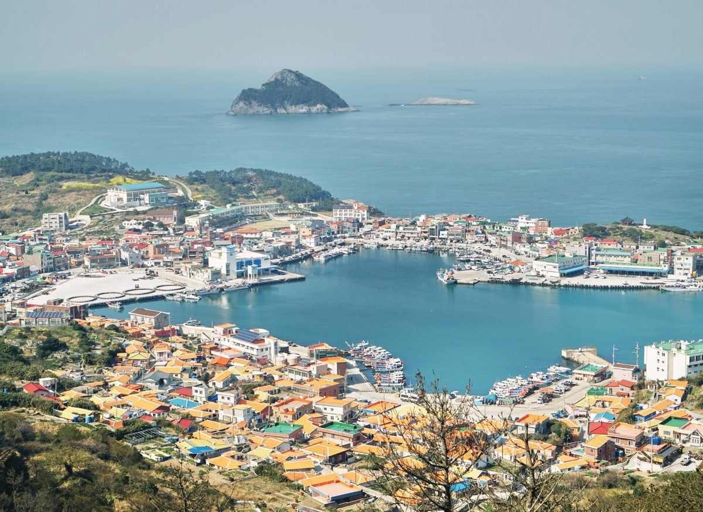

위성곤 제주지사, 추자해상풍력 연 1,300억 원 이익공유 조건은 무리…공모 조건 바꿔 연내 재추진

국내 최대 2.37GW·총사업비 16조~24조 원 추정, 두 차례 유찰로 1년 넘게 표류…고정 환원금 대신 사업자 자율 제안, 계통은 전남 접속도 허용 방침
제주 추자도 앞바다에 국내 최대 규모인 2.37GW급 해상풍력단지를 짓는 추자해상풍력 사업이 공모 조건을 바꿔 다시 추진된다. 위성곤 제주도지사는 22일 도청에서 열린 국회 행정안전위원회 국정감사에서 상업운전 뒤 해마다 1,300억 원대 이익공유금을 내도록 한 기존 조건이 "무리한 요구였다"며 사업을 방해한 잘못된 정책을 바꿔 연내 사업을 재개하겠다고 밝혔다. 박상웅 의원(국민의힘)은 서부해상풍력의 이익공유금이 110억 원인 데 비해 추자해상풍력에는 1,300억 원을 조건으로 내걸었고 사업비만 16조 원이 든다며 현실성을 따졌고, 2035년까지 해상풍력 5GW를 세우겠다는 제주의 목표가 가능한지도 물었다. 총사업비가 16조~24조 원으로 추정되는 이 사업은 전임 도정이 제주에너지공사를 풍력자원 공공 관리기관으로 지정해 2025년 7월 첫 공모에 나섰지만 한국중부발전이 중도 포기해 유찰됐고, 같은 해 9월 재공모에는 응모자가 없어 1년 넘게 멈춰 있었다. 도는 풍력발전사업 관련 조례를 고쳐 고정 금액 대신 사업자가 지역 환원 방안을 스스로 제안하게 했고, 제주 계통 연계만 허용하던 조건도 풀어 전남 등 육지로 연결하는 방안을 사업자가 제안할 수 있게 할 방침이다. 위 지사는 민간투자자가 충분히 참여할 수 있도록 제도를 고치고 계통 접속을 위해 전남과 협의하겠다고 말했다.
시민에너지 관점
해마다 1,300억 원이라는 고정 이익공유금이 두 차례 유찰로 이어진 것은, 사업자에게 돈을 거둬 나누는 방식의 공유가 한계에 부딪혔음을 보여 준다. 조건을 사업자 자율 제안으로 바꾸면 지역 몫이 크게 줄 수 있다는 우려가 나오는 것도 당연하지만, 답은 금액을 깎는 데가 아니라 도민이 처음부터 지분을 가진 주주로 참여하는 데 있다. 덴마크 미델그룬덴처럼 시민협동조합이 해상풍력 지분 절반을 가진 예도 있는 만큼, 바다라는 공공자원에서 나오는 이익은 사업자가 내는 환원금이 아니라 소유 지분으로 지역에 남아야 오래간다. 제주도는 공모 지침을 고치는 이번 기회에 도민과 어민이 참여하는 지분의 최소 비율과 투자 방식을 지침에 분명히 넣어야 한다.
출처: 제주의소리 2026-10-23 김정호 원문 보기
ウィ・ソンゴン済州知事、楸子洋上風力の年1,300億ウォン利益共有条件は無理…公募条件を見直し年内に再推進
国内最大の2.37GW・総事業費16兆〜24兆ウォンと推計、2度の不調で1年以上漂流…固定の還元金に代え事業者が自ら提案、系統は全羅南道への接続も認める方針
済州・楸子島（チュジャド）沖に国内最大規模となる2.37GW級の洋上風力発電団地を建設する楸子洋上風力事業が、公募条件を改めて再び進められる。ウィ・ソンゴン済州道知事は22日、道庁で開かれた国会行政安全委員会の国政監査で、商業運転後に毎年1,300億ウォン台の利益共有金を支払うよう求めた従来の条件について「無理な要求だった」と述べ、事業の妨げとなった誤った政策を改めて年内に事業を再開する考えを示した。国民の力のパク・サンウン議員は、西部洋上風力の利益共有金が110億ウォンなのに対し楸子洋上風力には1,300億ウォンを条件に掲げ、事業費だけで16兆ウォンかかるとして現実性をただし、2035年までに洋上風力5GWを整備するという済州の目標が実現可能かも問うた。総事業費が16兆〜24兆ウォンと推計されるこの事業は、前道政が済州エネルギー公社を風力資源の公共管理機関に指定して2025年7月に最初の公募を行ったが、韓国中部発電が途中で辞退して不調に終わり、同年9月の再公募には応募がなく、1年以上止まっていた。道は風力発電事業に関する条例を改正して固定額の代わりに事業者が地域還元策を自ら提案できるようにし、済州の系統への連系しか認めていなかった条件も緩め、全羅南道など本土につなぐ案も事業者が提案できるようにする方針だ。ウィ知事は、民間投資家が十分に参加できるよう制度を改め、系統接続に向けて全羅南道と協議すると述べた。
市民エネルギーの視点
毎年1,300億ウォンという固定の利益共有金が2度の不調につながったことは、事業者から資金を集めて分け合う方式の共有が限界にぶつかったことを示している。条件を事業者の自主提案に変えれば地域の取り分が大きく減りかねないとの懸念が出るのも当然だが、答えは金額を削ることではなく、道民が最初から持ち分を持つ株主として参加することにある。デンマークのミデルグルンデン洋上風力のように市民協同組合が持ち分の半分を持つ例もある以上、海という公共資源から生まれる利益は、事業者が払う還元金ではなく所有の持ち分として地域に残ってこそ長続きする。済州道は公募指針を改める今回の機会に、道民と漁業者が参加する持ち分の最低比率と投資方式を指針に明記すべきだ。
出典: Jeju Sori 2026-10-23 Kim Jeong-ho 原文を読む
济州知事Wi Sung-gon称楸子海上风电每年1,300亿韩元利益共享条件过高…修改招标条件年内重启
韩国最大的2.37GW项目、总投资估计16万亿至24万亿韩元，两次流标后搁置一年多…以开发商自主提案取代固定回馈金，电网也将允许接入全罗南道
在济州楸子岛附近海域建设韩国最大规模2.37GW级海上风电园区的楸子海上风电项目，将修改招标条件后重新推进。济州道知事Wi Sung-gon 22日在道厅举行的国会行政安全委员会国政监查中，谈到原先要求商业运营后每年缴纳1,300亿韩元级利益共享金的条件时表示，这"是过分的要求"，将修改阻碍项目的错误政策，年内重启项目。国民力量党议员Park Sang-woong指出，西部海上风电的利益共享金为110亿韩元，而楸子海上风电却以1,300亿韩元为条件，仅项目费用就需16万亿韩元，质疑其现实性，并追问济州到2035年建成5GW海上风电的目标能否实现。这一总投资估计为16万亿至24万亿韩元的项目，曾由前任道政府指定济州能源公社为风能资源公共管理机构，于2025年7月首次招标，但因韩国中部发电中途退出而流标；同年9月再次招标时无人应标，项目因此停滞了一年多。济州道已修改风电项目相关条例，不再强制固定金额，而是由开发商自主提出地方回馈方案；还将放宽只允许接入济州电网的条件，让开发商可以提出连接全罗南道等内陆地区的方案。Wi知事表示，将改进制度让民间投资者能够充分参与，并就电网接入与全罗南道协商。
市民能源视角
每年1,300亿韩元的固定利益共享金导致两次流标，说明向开发商收钱再分配的共享方式已经碰壁。有人担心，把条件改为开发商自主提案后，地方所得可能大幅减少，这种担忧理所当然；但答案不在于压低金额，而在于让道民从一开始就作为持股股东参与。既然有丹麦Middelgrunden那样由市民合作社持有海上风电一半股份的先例，来自海洋这一公共资源的利益，就应当以所有权股份而不是开发商缴纳的回馈金形式留在地方，才能长久。济州道应借这次修改招标指南的机会，在指南中明确写入道民和渔民参与持股的最低比例和投资方式。
来源: Jeju Sori 2026-10-23 Kim Jeong-ho 查看原文
Jeju Governor Wi Sung-gon calls Chuja offshore wind's 130 billion won annual benefit-sharing condition excessive, plans relaunch with revised tender this year
Korea's largest project at 2.37GW, with costs estimated at 16 to 24 trillion won, has drifted for over a year after two failed tenders; developers to propose their own community returns instead of a fixed sum, and grid connection to South Jeolla to be allowed
The Chuja offshore wind project, which would build Korea's largest offshore wind complex at 2.37GW off Chujado island in Jeju, will be pursued again under revised tender terms. At a National Assembly Public Administration and Security Committee audit held at the provincial office on the 22nd, Jeju Governor Wi Sung-gon said the earlier requirement to pay around 130 billion won a year in benefit-sharing after commercial operation "was an excessive demand," adding that he would change a mistaken policy that had obstructed the project and restart it within the year. Rep. Park Sang-woong of the People Power Party questioned whether the project was realistic, noting that the Chuja project carried a 130 billion won condition compared with 11 billion won for the Western offshore wind project and would cost 16 trillion won on its own, and also asked whether Jeju's target of 5GW of offshore wind by 2035 was achievable. The project, with total costs estimated at 16 to 24 trillion won, was first tendered in July 2025 after the previous administration designated Jeju Energy Corporation as the public manager of wind resources, but it fell through when Korea Midland Power withdrew midway, and a second tender that September drew no bidders, leaving it stalled for more than a year. The province has revised its wind power ordinance so that developers propose their own community benefit plans instead of paying a fixed amount, and plans to drop the requirement to connect only to Jeju's grid so developers can also propose links to the mainland, including South Jeolla. Wi said the province will reform the system so private investors can participate fully and will consult South Jeolla on grid connection.
Citizen Energy View
That a fixed benefit-sharing payment of 130 billion won a year led to two failed tenders shows that sharing by collecting money from developers and handing it out has hit its limit. It is natural to worry that letting developers propose their own terms could sharply shrink the community's share, but the answer lies not in cutting the amount but in having Jeju residents join as equity shareholders from the start. With examples such as Denmark's Middelgrunden, where a citizens' cooperative owns half of an offshore wind farm, profits from a public resource like the sea will last longer if they stay in the community as ownership stakes rather than as payments from developers. As it rewrites the tender guidelines, Jeju should spell out a minimum share of equity for residents and fishers and how they can invest.
Source: Jeju Sori 2026-10-23 Kim Jeong-ho Read the original